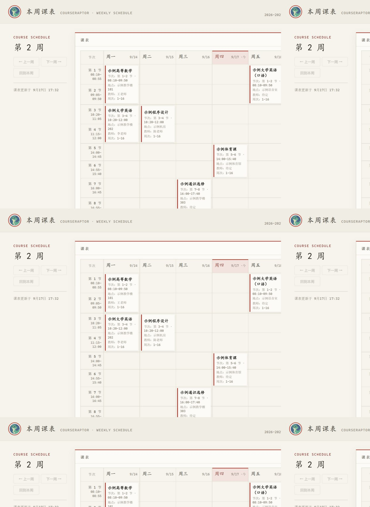

下一节课，
不用翻来翻去。
按学期与教学周查询课表，整理节次、地点和单双周。已记录的放假与调休安排也一起考虑。
“这周的课，按天帮我整理一下。”
为南工同学打造 · 开源 · 个人电脑运行
早八在哪上，通识修了哪些，考试什么时候。
把反复翻找的时间，留给更想做的事。
无需账号即可体验离线演示。正式查询需自行配置教务账号与模型 API Key。
01 / LESS SEARCHING, MORE LIVING
从“去哪上课”到“导入手机日历”，
让零散的教务信息，在同一个对话里变清楚。
按学期与教学周查询课表，整理节次、地点和单双周。已记录的放假与调休安排也一起考虑。
查看 GPA、已获学分、未通过与待确认课程。通识分类辅助核对，具体要求以本人培养方案为准。
查询考试日期、时间、考场与座位信息，再导出到手机日历。变更后请重新核对和同步。
从列表读到正文和附件，按你的问题提取行动要点。保留原文入口，重要日期随时核对。
读取文档、查询表格、辅助整理内容，生成 Word、Excel、PPT 或 PDF 后，在网页直接下载。
02 / JUST ASK
点一个问题，看看回答的样子。
这里只展示虚构示例，不连接教务系统或 AI。
真实的本地离线演示见下方开始使用。
这周有什么课？
🦖 小恐龙
以上全部为虚构数据。正式查询会结合你的教学周和已记录的调休安排。
03 / ON YOUR OWN DESK
常用提问一键开始，对话归档方便回看。
正式模式支持下载日历和生成的文档。

04 / YOUR FIRST CONVERSATION
先体验，再决定要不要配置。
演示无需教务账号、API Key，也不会调用 AI。
这是源码压缩包，需先安装 Node.js 24 或更高版本。
安装 Node.js 24+ ↗，下载项目并解压。
npm ci
npm run doctor
npm run demo默认 http://127.0.0.1:3211，点击常用问题即可体验。完成后按 Ctrl+C 退出。
BEFORE YOU START
不是。CourseRaptor 是非官方开源项目，当前适配南京工业大学，适合在个人电脑上自用，没有学校官方隶属或背书。
项目以 ISC 许可证开源。离线演示不调用 AI；正式对话会把提问与所需查询结果发送到配置的模型服务，可能产生 API 费用。教务凭证保存在你自己的电脑，请勿分享已使用的项目目录。
这个网站是项目介绍页，不是在线教务服务。正式助手运行在你的电脑上；可把生成的 .ics 日历文件导入手机，或自行配置公开的 GitHub / Gitee 订阅源。公开订阅可能暴露课程与地点，发布前需确认。
目前没有通用后台主动提醒。今日日程、截止提醒和变更提示在路线图中；真实选课功能默认关闭，具体行为与限制见能力说明。
先运行 npm run doctor 检查运行前提，再看同学使用指南。可复现错误请提交 Issue，使用想法可到 Discussions 交流。请勿上传学号、成绩单、密码、API Key 或完整日志。
BUILT IN THE OPEN
如果它帮你省下了一点时间，欢迎给个 Star，
也欢迎把真实需求带回来，一起让它更好用。